| 作者: | gashero |
|---|---|
| 日期: | 2014-04-01 |
目录
@page 1
@page 2
@page 3
@page 6
@page 7
@page 14
@page 22
@page 30
@page 34
@page 43
@page 48
@page 62
TCNT0简介：
功能框图：
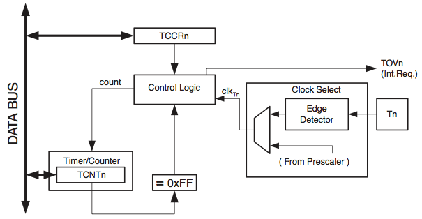TCNT0和OCR0都是8bit寄存器。中断需求在TIFR中有设置。所有中断都可以通过TIMSK单独屏蔽。因为TIFR和TIMSK是与其他定时器共享的，没有列出。
可以通过预分频器获得时钟源，或通过T0输入的外部时钟驱动。由时钟选择逻辑决定用哪个时钟源和边沿，以及是自增或自减的。没有时钟源就不工作。
可以由内部同步时钟或外部时钟驱动。由TCCR0的CS02:0设置。
8bit可编程双向计数单元。框图：
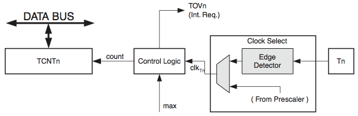信号说明：
计数器对每个clk_T0实现加一操作。没有时钟源就不会加1，但无论何时CPU都可以访问TCNT0。CPU的写操作比计数器操作(清零，加减)的优先级高。
技术方向始终向上，且没有计数器清除操作。TCNT0>MAX(0xff)时，重载到0x00。正常工作而TCNT0清零到0x00时，会置位TOV0。TOV0就像是第9位，只会置位，不会清零。TOV0标识可用定时器中断清零。可随时写入新的计数器值。
如果TCNT0配置为使用外部时钟，即便T0被配置为输出，电平变化仍然会驱动计数器，可以作为软件控制计数。
TCCR0(TCNT0控制寄存器) 定义 [7:-][6:-][5:-][4:-][3:-][2:CS02][1:CS01][0:CS00] 。其中最低3位构成了CS02..0，其取值用于定义预分频器的分频值，如下：
| CS02..0 | 说明 |
| 000 | 无时钟，不工作 |
| 001 | clkio/1，不分频 |
| 010 | clkio/8 |
| 011 | clkio/64 |
| 100 | clkio/256 |
| 101 | clkio/1024 |
| 110 | 时钟由T0引脚输入，下降沿触发 |
| 111 | 时钟由T0引脚输入，上升沿触发 |
TCNT0(TCNT0寄存器) ：作为计数器
TIMSK(中断屏蔽寄存器) ：3个定时器共用的，定义 [7:OCIE2][6:TOIE2][5:TICIE1][4:OCIE1A][3:OCIE1B][2:TOIE1][1:-][0:TOIE0] 。其中只有最低位TOIE0是属于定时器0的。
TIFR(中断标志寄存器) ：3个定时器共用的，定义 [7:OCF2][6:TOV2][5:ICF1][4:OCF1A][3:OCF1B][2:TOV1][1:-][0:TOV0] 。其中只有最低位的TOV0是属于定时器0的。
T/C0与T/C1共用一个分频器模块，但可以有不同的分频设置。
CSn2:0=1时，系统内部始终直接作为T/C时钟源，也是最高频率的时钟源。预分频器可以输出4个不同的始终信号。对应8、64、256、1024分频。
@page 70-70
T1/T0引脚提供外部时钟源输入。每个系统始终周期对T1/T0采样，然后将采样信号输入到边沿检测器。寄存器由系统时钟的上升沿驱动。当内部时钟为高时，锁存器可以看做是透明的。
CSn2:0=7时，边沿检测器检测到一个正跳变产生一个CLK_T1脉冲。CSn2:0=6时，一个负跳变产生一个CLK_T0脉冲。
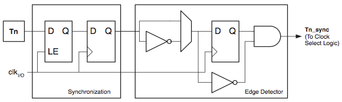当使用外部时钟从T0/T1引脚输入时，需要2.5~3.5个系统时钟才能使计数器更新。
禁止或使能外部时钟输入，必须在T0/T1保持稳定一个系统时钟周期之后才能进行，否则会出错。
为保证正确的采样，外部时钟脉冲宽度必须大于一个系统时钟周期。占空比为50%时外部时钟频率必须小于系统时钟频率的一半(f_EXTCLK<f_CLKIO/2)。因为边沿检测器使用采样，能检测到的外部时钟最高也只是采样频率的一半(Nyquist采样原理)。由于振荡器误差和占空比的差异。建议外部时钟频率不要超过系统时钟的2.5分之一。
外部时钟输入不进入预分频器。
预分频器：
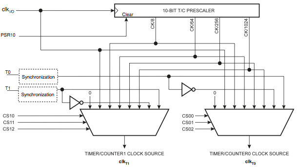SFIOR(特殊功能IO寄存器) ：定义 [7:-][6:-][5:-][4:-][3:ACME][2:PUD][1:PSR2][0:PSR10] ，只有最低位的PSR10与此有关。
TCNT1简介：
框图：
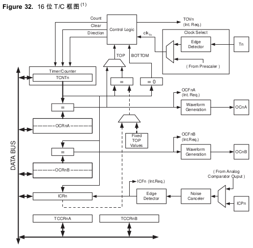TCNT1、OCR1A、OCR1B、ICR1都是16bit寄存器。访问16bit寄存器需要特定步骤。控制寄存器TCCR1A和TCCR1B是8bit寄存器，没有CPU访问限制。中断请求信号在TIFR中。所有中断可用TIMSK单独屏蔽。
时钟源可选内部分频器或T1外部输入。没有选择时钟源时，TC1就停止工作。
双缓冲输出比较寄存器OCR1A、OCR1B一直与TCNT1比较。波形发生器用比较结果产生PWM或在输出比较引脚OC1A、OC1B输出可变频率的信号。比较匹配结果还可以置位比较匹配标志OCF1A、OCF1B，产生输出比较中断请求。
当输入捕捉引脚ICP1或模拟比较器输入引脚有输入捕捉事件产生时，当时TCNT1的值会传输到输入捕捉寄存器保存起来。输入捕捉单元包括一个数字滤波单元以降低干扰。
某些操作模式下，TOP值或TCNT1最大值可以由OCR1A、ICR1、或一些固定数据来定义。PWM模式下用OCR1A作TOP值，OCR1A寄存器不能用作PWM输出。但此时OCR1A是双向缓冲的，TOP值可以在运行时改变。当需要固定TOP值时用ICR1寄存器，而释放OCR1A作PWM输出。
几个定义：
该计数器是对以前的升级，兼容旧版本的：
下列控制位名称改变了，但是具有相同功能寄存器单元：
添加了如下位：
一些改进影响兼容性。
C访问TCNT1的例子，包含防止中断影响的部分:
unsigned int TIM16_ReadTCNT1(void) {
unsigned char sreg;
unsigned int i;
//保存全局中断标志
sreg=SREG;
_CLI();
i=TCNT1;
SREG=sreg;
return i;
}
@page 74-76
时钟源可以来自内部，也可以来自外部T1。由TCCR1B的CS12:0控制。
框图：
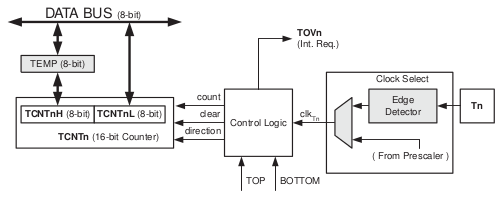信号描述：
@page 77-77
T/C1的输入捕获单元可以捕获外部事件，并记录时间标记。外部事件的触发信号从ICP1输入，也可以通过模拟比较器单元实现。时间标记可用来计算频率、占空比等，以及创建事件日志。
框图：
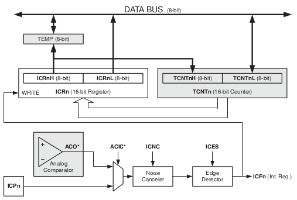当ICP1输入或模拟比较器输出ACO电平变化，就触发输入捕捉，将TCNT1的数据拷贝到输入捕捉寄存器ICR1中，同时输入捕捉标志位ICF1置位。如果此时ICIE1=1则产生输入捕捉中断，中断执行时ICF1自动清零，也可以软件写1来清零。
读取ICR1(16bit)时应该先读ICR1L，然后读ICR1H。对C语言，编译器已经处理好了。
当波形产生模式时，才需要写ICR1，此时被用作计数器TOP值。写之前要先设置WGM13:0使能。对ICR1的写操作必须先写ICR1H，然后ICR1L。
输入捕捉单元的主要触发源是ICP1。可用模拟比较输出作为输入捕捉单元的触发源。用户必须设置ACSR寄存器的ACIC来实现。改变触发源会造成一次输入捕捉，因为改变触发源后必须对输入捕捉标志执行一次清零操作，以免出现错误。
ICP1与ACO的采样方式与T1相同，只不过可选噪声抑制，就是延迟4个时钟周期来避免噪声。除去使用ICR1定义TOP的波形产生模式外，T/C噪声抑制器与边沿检测器总是使能。
软件也可以控制ICP1引脚来产生触发。
噪声抑制器通过简单的数字滤波来提供系统抗噪声性能。对输入信号4次采样，只有4次采样结果相同才会送入边沿检测器。
置位TCCR1B的ICNC1使能噪声抑制器。使能后，在输入发生变化到ICR1更新之间会有额外的4个系统周期的延时，此系统时钟不受分频器影响。
输入捕捉最大的问题是要有足够的处理器资源来处理输入事件。必须确保下一次事件之前读取ICR1数据，否则会被覆盖。如果使用输入捕捉中断，则应该尽早读取ICR1数据。不推荐在输入捕捉模式下改变TOP值。
测量外部信号占空比时，需要每次捕捉后都改变触发沿，因此读取ICR1后尽快改变，然后马上软件清零ICF1(在对应位写1)。如果只是测量频率，且使用了中断，则无需对ICF1软件清零。
WGM13:0的多种设置中只要没有占用ICR1作为TOP值的，输入捕获就可以工作。
16bit比较器持续比较TCNT1与OCR1x的内容，一旦发现相同就在下一个时钟周期对OCF1x置位。如果OCIE1x=1，则产生输出比较中断，中断执行时自动对OCF1x清零，或软件在对应位写1清零。根据WGM13:0和COM1x1:0的设置，波形发生器用匹配信号生成不同的波形。
输出比较单元A可以定义T/C的TOP值(计数器的分辨率)，TOP值还用来定义波形周期。
框图：
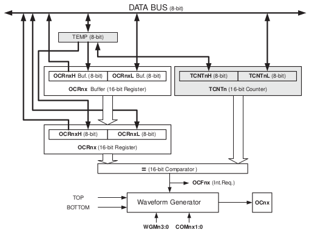当T/C工作在12种PWM模式之一时，OCR1x寄存器为双缓冲寄存器；而在正常模式和匹配时清零模式(CTC)双缓冲功能禁止。双缓冲可以实现OCR1x对TOP和BOTTOM的同步更新，防止产生不对称的PWM波形，消除毛刺。
使用双缓冲时，CPU访问的是OCR1x的缓冲，禁止双缓冲时，CPU访问的是OCR1x本身。只有写操作才能改变OCR1x，所以OCR1x不能通过TEMP读取。读取时先读低字节。写OCR1x通过TEMP寄存器。先写OCR1xH。当CPU将数据写入高字节的IO地址时，TEMP寄存器的内容才更新，接下来写OCR1xL。同时，TEMP中的高字节数据拷贝到OCR1x缓冲器，或OCR1x比较寄存器。硬件不会改变OCR1x寄存器的内容，自己写OCR1x应该先高字节后低字节。
非PWM时，可以强制FOC1x为1来产生比较匹配。强制比较匹配不会置位OCF1x标志，也不重载/清零定时器，但OC1x引脚会被更新，好像真的发生匹配一样(COMx1:0决定OC1x是置位、清零，还是交替变化)。
对TCNT1的写操作会阻止比较匹配的发生，可以用来将OCR1x初始化为与TCNT1相同的数值而不触发中断。小心此特性导致的匹配的丢失。不要设置TCNT1等同于TOP或BOTTOM。若写TCNT1=OCR1x则比较匹配就被忽略了，造成不正确的波形。PWM模式下，当TOP为可变数值时，不要让TCNT1=TOP，否则会丢失一次匹配，计数器也将一直到0xffff。相同的，将序计数时，不要让TCNT1写入等于BOTTOM的值。
OC1x的设置应该在设置数据方向寄存器之前完成。最简单的OC1x设置是普通模式下强制输出比较FOC1x。即使改变波形发生器模式，OC1x也会一直保持其值。
COM1x1:0和比较数据都不是双缓冲，COM1x1:0的改变立即生效。
比较匹配模式COM1x1:0有双重功能。波形发生器用COM1x1:0确定下次比较匹配发生时的输出比较OC1x状态。COM1x1:0还控制OC1x引脚输出的来源。
框图：
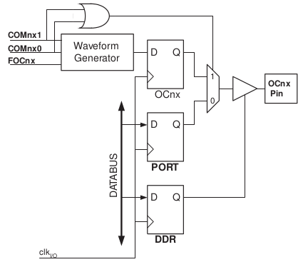只要COM1x1:0不全为0，则波形发生器就会重载OC1x的通用IO口功能。但是OC1x引脚方向仍然受DDR控制。想要输出波形需要确保DDR_OC1x为输出。必须在DDR_OC1x设置前先初始化OC1x。COM1x1:0的设置在某些工作模式下保留。
波形发生器使用COM1x1:0在普通、CTC、PWM模式下有区别。对所有模型，COM1x1:0=0表示比较匹配发生时波形发生器不改变OC1x寄存器。
改变COM1x1:0将影响写入数据后的第一次比较匹配。对非PWM模式，可以通过使用FOC1x来立即产生效果。
工作模式由波形发生器WGM13:0和比较输出模式COM1x1:0的控制位决定。比较输出模式对计数序列没有影响，而波形产生模式对计数序列有影响。COM1x1:0控制PWM输出是否为反极性。非PWM模式时COM1x1:0控制输出是否应该在比较匹配时置位、清零、取反。
固定TOP时最好用ICR1定义TOP，而不固定时需要用OCR1A定义TOP。
WGM13:0=0，计数器不停累加，到最大值TOP=0xffff后溢出并回到最小值0x0000重新开始。在TCNT1为0时置位TOV1中断标志位。中断服务程序会自动清零TOV1。用户随时可以写入新的计数器值。
普通模式下输入捕获单元很容易使用。要注意外部事件最大时间间隔不能超过计数器分辨率。如果时间太长，就必须使用溢出中断或预分频器来扩展输入捕获的分辨率。
输出比较单元可以用来产生中断，但是不推荐利用输出比较来产生波形，因为会占用太多CPU时间。
CTC模式的WGM13:0=4或12。OCR1A或ICR1用于调整计数器分辨率，作为TOP值。TCNT1=TOP时，TCNT1清零。方便用户控制输出频率，简化外部事件计数。
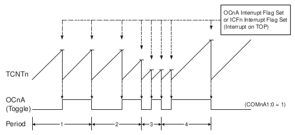利用OCF1A或ICF1标志可以在计数器到达TOP时产生中断，中断里可以修改TOP数值。不过小心如果写入的数值接近TOP或BOTTOM，则可能丢失一次匹配，而一直计数到0xffff才返回。这一特性显然不好，替代方法是使用快速PWM模式，该模式使用OCR1A定义TOP值(WGM13:0=15)，因为此时OCR1A为双缓冲。
要获得波形输出，要先设置DDR_OC1A=1，然后设置COM1A1:0=1在匹配发生时改变逻辑电平。波形发生器产生的频率公式 fOCnA = (fclkIO)/(2*N*(1 + OCRnA)) 。其中N为分频因子(1/8/64/256/1024)。
其中N为分频因子(1、8、32、64、128、256、1024)。
在普通模式下，TOV1标志位的置位发生在MAX到0x0000的定时器周期内。
快速PWM模式，WGM13:0=5、6、7、14、15，可以用来产生高频的PWM波形。不同之处是工作于单边斜坡方式，计数器从BOTTOM累加到TOP，然后立即回到BOTTOM重新开始。对于普通的比较输出模式，OC1x在TCNT1与OCR1x匹配时置位，在TOP时清零；反向比较输出模式正好相反。快速PWM模式频率高，特别适合功率调节、整流、DAC。
快速PWM的分辨率可以固定为8、9、10位，也可以由ICR1或OCR1A定义，最小2比特0x0003，最大分辨率16位。固定为8、9、10位时，TOP对应0x00ff、0x01ff、0x03ff(WGM13:0=5、6、7)。而WGM13:0=14时TOP=ICR1、WGM13:0=15时TOP=OCR1A。
PWM分辨率位数公式： RFPWM = (log(TOP + 1))/((log(2)) 。
工作于快速PWM模式时，计数器一直累加到TOP。然后在下个时钟周期清零。如下图，包含了PWM输出和反向PWM输出。TCNT1斜坡上的短水平线表示OCR1x和TCNT1的匹配比较。比较匹配后OC1x中断标志置位。
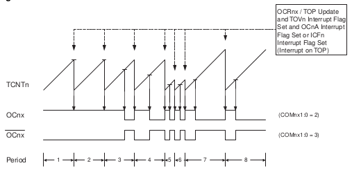计数器到达TOP时置位TOV1，如果TOP是由OCR1A或ICR1定义则OC1A或ICF1同时置位。如果中断使能，可以在中断服务程序里更新TOP值和比较值。改变TOP值时不能小于所有比较寄存器的值，否则不会出现匹配比较。使用固定TOP值时，向任意OCR1x寄存器写入数据时未使用的位将屏蔽为"0"。
ICR1不是双缓冲寄存器。在预分频比例很低时，设置ICR1为新TOP时有可能比当前TCNT1还小，导致计数器一直狂奔到0xffff才返回。而OCR1A是双缓冲寄存器，当前更新不影响本次累加到TOP，而在TCNT1重置后才开始使用新的TOP值。同一时钟周期TCNT1被清零，TOV1置位。
使用固定TOP值时最好用ICR1定义TOP值，OCR1A可以用于在OC1A输出PWM波。不过如果PWM基频不断变化(改变TOP值)，则应该利用OCR1A的双缓冲特性避免频率失控。
要输出PMW波则设置COM1x1:0为2，反向PWM为3。然后设置DDR_OC1x为输出。PWM波形产生原理是OC1x在OCR1x与TCNT1匹配时置位(清零)，然后在计数器清零(从TOP变成BOTTOM)时清零(置位)。
输出PWM频率公式 fOCnxPWM = (fclkIO)/(N*(1 + TOP)) ，N为分频因子(1、8、64、256、1024)。
OCR1x等于BOTTOM(0x0000)时，在TOP+1个定时器周期输出窄脉冲；OCR1x等于TOP时，根据COM1x1:0，输出恒定高电平或低电平。
OC1A设置匹配时取反(COM1A1:0=1)，可以得到占空比50%的信号。只适用于OCR1A定义TOP值时(WGM13:0=15)。OCR1A为0x0000时，信号有最高频率 fOC1A = (fclkIO)/(2) 。类似于CTC模式的OC1A取反操作，不同是快速PWM有双缓冲。
WGM13:0=1,2,3,10,11提供高精度，相位准确的PWM波形。与相位和频率修正模式都是 双斜坡操作 。当TCNT1自增时若TCNT1==OCR1x，OC1x将变为低电平；当TCNT1自减时若TCNT1==BOTTOM，OC1x将变为高电平。反向比较输出时则正好相反。双斜坡比单斜坡的频率低，但其对称性很适合电机控制。
分辨率可以选固定的8、9、10位，或ICR1、OCR1A来定义，最小分辨率2bit(ICR1、OCR1A设为0x0003)，最大分辨率16bit。PWM分辨率位数可以如下计算 RPCPWM = (log(TOP + 1))/(log(2)) 。
相位修正模式工作时，计数器累加到TOP，然后改变计数方向递减。对OC1x的反转事件由2个OCR1x匹配控制，一个在上升或下降途中，另一个是在TOP值时。在递减到达BOTTOM时，仅置位TOV1，而不改变OC1x输出。对 相频修正PWM模式 也适用。
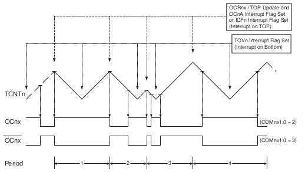TCNT1==BOTTOM时，置位TOV1，若TOP=OCR1A或ICR1，则在OCR1x寄存器通过双缓冲模式得到更新的同一个时钟周期里OC1A或ICF1置位。
OCR1A作TOP值且启用双缓冲时，注意只是在计数器溢出到达BOTTOM时才更新新的TOP值。所以下降区间取决于之前的TOP，而新的上升区间取决于新的TOP。若在TCNT1自增时改变OCR1x的TOP，则导致输出不对称。若要运行时改变TOP值最好用相位与频率修正模式。如果TOP值不变，两者没区别。
相位修正模式的PWM频率 fOCnxPCPWM = (fclkIO)/(2*N*TOP) 。其中N为预分频因子。
若OCR1x=BOTTOM，则一直输出低电平；OCR1x=TOP则一直输出高电平，这一点比快速PWM好些就在于没有OCR1x=BOTTOM时的窄高电平。
若OCR1A定义TOP值(WGM13:0=11)，且COM1A1:0=1，则OC1A输出占空比50%的周期信号。
WGM13:0=8、9，以下简称相频修正PWM模式，可以产生高精度，相位和频率都准确的PWM波形。基于双斜坡操作。if (TCNT1++==TOP) {OC1x=0}。if(TCNT1--==BOTTOM) {OC1x=1}。反向输出模式时正好相反。频率比快速PWM模式的低，但对称性更适合电机控制。
相频修正与相位修正PWM的主要区别在于OCR1x寄存器的更新时间。相位修正PWM是立即更新的，所以一个周期中可能左右不对称，产生一个频率位于前后两次设置频率之间的一个频率。而相频修正PWM对OCR1x使用双缓冲，在下次BOTTOM时才更新OCR1x，所以每个周期的OC1x都是左右对称的，确保频率正确。
相频修正PWM分辨率由ICR1或OCR1A定义，最小为2(对应0x0003)，最大16bit。分辨率位数计算 RFCPWM = (log(TOP + 1))/(log(2)) 。
此模式TCNT1一直自增到TOP(ICR1或OCR1A)，然后开始自减。
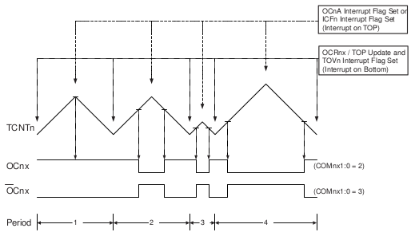在OCR1x寄存器通过双缓冲方式得到更新的同一周期里，TOV1置位。若TOP=OCR1A或ICR1，则当TCNT1==TOP时，OC1A或CF1置位。可用于在TCNT1=TOP或BOTTOM时产生中断。
相频修正PWM模式在所有周期中都是对称的信号。这是由于OCR1x在BOTTOM时更新，上升与下降斜坡始终相等。确保了频率的正确。
固定TOP值时最好用ICR1作为TOP。这样OCR1A可用于在OC1A输出PWM波。但如果基频会变化(改变TOP值)，则OCR1A的双缓冲更合适。
相频修正PWM模式在OC1x引脚输出PWM波形。原理是OC1x寄存器在OCR1x与升序TCNT1匹配时置位，在与降序TCNT1匹配时清零。
输出频率公式 fOCnxPFCPWM = (fclkIO)/(2*N*TOP) 。N为分频因子(1、8、64、256、1024)。
OCR1x=BOTTOM时一直保持低电平，OCR1x=TOP则一直保持高电平。
若OCR1A作为TOP(WGM13:0=9)且COM1A1:0=1，则OC1A输出占空比为50%的周期信号。
定时器/计数器是同步电路。clk_T1是时钟信号。图中说明了何时设置中断标志及何时使用OCR1x缓冲器中的数据更新OCR1x寄存器(双缓冲模式)。
T/C时序图，OCF1x置位，无预分频器：
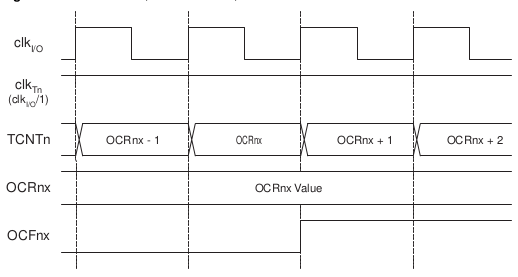置位OCF1x，8分频：
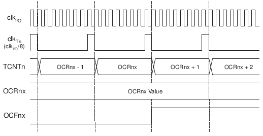不同模式下，接近TOP时的计数序列。工作于相频修正PWM模式时，OCR1x寄存器在BOTTOM时被更新。时序图相同，但TOP用BOTTOM代替，BOTTOM+1代替TOP-1。同样命名规则也适用于在BOTTOM置位TOV标志的工作模式。
无预分频器：
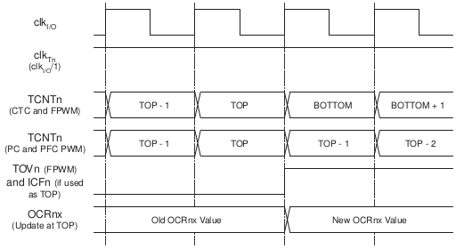8分频：
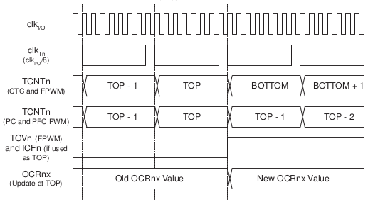TCCR1A(T/C1控制寄存器A) ：定义 [7:COM1A1][6:COM1A0][5:COM1B1][4:COM1B0][3:FOC1A][2:FOC1B][1:WGM11][0:WGM10] 。各个位定义：
一旦COM1A1:0或COM1B1:0不为0，则启用OC1A/OC1B。不过必须先设置DDR为输出才能使能输出驱动器。不过其功能还是受到WGM13:0的控制。
WGM13:0为普通模式和CTC模式时COM1x1:0的功能定义：
| COM1x1 | COM1x0 | 说明 |
| 0 | 0 | 普通端口，OC1A/OC1B未连接 |
| 0 | 1 | 比较匹配时OC1A/OC1B取反 |
| 1 | 0 | 比较匹配时清零OC1A/OC1B(输出低电平) |
| 1 | 1 | 比较匹配时置位OC1A/OC1B(输出高电平) |
WGM13:0为快速PWM模式时COM1x1:0的功能定义：
| COM1x1 | COM1x0 | 说明 |
| 0 | 0 | 普通端口，OC1A/OC1B未连接 |
| 0 | 1 | WGM13:0=15；比较匹配时，OC1A取反，OC1B未连接 WGM13:0为其他值时为普通端口 |
| 1 | 0 | 比较匹配时清零OC1A/OC1B，OC1A/OC1B在TOP时置位 |
| 1 | 1 | 比较匹配时置位OC1A/OC1B，OC1A/OC1B在TOP时清零 |
当OCR1A/OCR1B等于TOP且COM1A1/COM1B1置位时，比较匹配被忽略，但是置位/清零有效。详见快速PWM模式。
比较输出模式、相位修正及相频修正PWM模式：
| COM1x1 | COM1x0 | 说明 |
| 0 | 0 | 普通端口，OC1A/OC1B未连接 |
| 0 | 1 | WGM13:0=9/14，比较匹配时OC1A取反，OC1B未连接, WGM13:0其他值时为普通端口，OC1A/OC1B未连接 |
| 1 | 0 | 升序计数时比较匹配清零OC1A/OC1B，降序时置位 |
| 1 | 1 | 升序计数时比较潎批置位OC1A/OC1B，降序时清零 |
OCR1A/OCR1B等于TOP且COM1A1/COM1B1置位是一个特殊情况，详见相位修正PWM模式。
FOC1A/FOC1B只有当WGM13:0为非PWM模式时才激活。在PWM时必须写0，当FOC1A/FOC1B置位，立即强制波形产生器进行比较匹配。COM1x1:0的设置改变OC1A/OC1B的输出。FOC1A/FOC1B位作为选通信号，COM1x1:0位的值决定强制比较效果。
CTC模式下，OCR1A作为TOP值，FOC1A/FOC1B的选通不会产生中断和清除定时器。FOC1A、FOC1B的读取总是0。
WGM13:0 其实是TCCR1A和TCCR1B中共同的4个位，用以控制计数器的计数序列和波形发生器的工作模式。工作模式有：
具体的WGM13:0配置映射需要先参考WGM13:0各个位的意义：
模式映射：
| 模式 | WGM13:0 | 工作模式 | TOP | OCR1x更新时 | TOV1置位时 |
| 0 | 0000 | 普通模式 | 0xffff | 立即更新 | MAX |
| 1 | 0001 | 8位相位修正PWM | 0x00ff | TOP | BOTTOM |
| 2 | 0010 | 9位相位修正PWM | 0x01ff | TOP | BOTTOM |
| 3 | 0011 | 10位相位修正PWM | 0x03ff | TOP | BOTTOM |
| 4 | 0100 | CTC | OCR1A | 立即更新 | MAX |
| 5 | 0101 | 8位快速PWM | 0x00ff | TOP | TOP |
| 6 | 0110 | 9位快速PWM | 0x01ff | TOP | TOP |
| 7 | 0111 | 10位快速PWM | 0x03ff | TOP | TOP |
| 8 | 1000 | 相位与频率修正PWM | ICR1 | BOTTOM | BOTTOM |
| 9 | 1001 | 相位与频率修正PWM | OCR1A | BOTTOM | BOTTOM |
| 10 | 1010 | 相位修正PWM | ICR1 | TOP | BOTTOM |
| 11 | 1011 | 相位修正PWM | OCR1A | TOP | BOTTOM |
| 12 | 1100 | CTC | ICR1 | 立即更新 | MAX |
| 13 | 1101 | 保留 | -- | -- | -- |
| 14 | 1110 | 快速PWM | ICR1 | TOP | TOP |
| 15 | 1111 | 快速PWM | OCR1A | TOP | TOP |
TCCR1B(T/C1控制寄存器B) ：定义 [7:ICNC1][6:ICES1][5:-][4:WGM13][3:WGM12][2:CS12][1:CS11][0:CS10] 。各个位定义：
[7:ICNC1]{RW/0} ：输入噪声抑制器，此时启用ICP1的输入滤波，就是4次采样，如果值都相同才送入边沿检测器，导致了延迟4个周期
[6:ICES1]{RW/0} ：输入捕捉触发沿选择，选择ICP1上的触发沿捕获事件，0为下降沿，1为上升沿。捕获到事件后计数器值送入ICR1寄存器，捕获事件还置位ICF1，如果使能中断还触发中断。当ICR1作TOP值时，ICP1的输入捕获就无效了。
[5:-]{R/0} ：保留，写入时必须为0
[4-3:WGM13-2]{RW/0} ：WGM13:2波形发生器模式，见WGM13:0
[2-0:CS12-0]{RW/0} ：时钟选择CS12:0，见下表：
- CS12:0=000，无时钟源，停止
- CS12:0=001，无分频
- CS12:0=010，8分频
- CS12:0=011，64分频
- CS12:0=100，256分频
- CS12:0=101，1024分频
- CS12:0=110，外部T1引脚，下降沿驱动
- CS12:0=111，外部T1引脚，上升沿驱动
当定义使用外部时钟源时，即时T1引脚定义为输出，其上逻辑电平变化也会引起T/C1计数，用以实现软件计数器。
TCNT1H 和 TCNT1L ，就是计数器1的计数值，共同组成了TCNT1。
为了保证CPU对高字节和低字节的同时读写，引入了8bit临时高字节寄存器TEMP。TEMP是所有16bit寄存器共用的。
修改TCNT1时可能丢失一次OCR1x的比较匹配操作，写好后会在下一个时钟周期阻塞比较匹配。
OCR1AH 和 OCR1AL ：输出比较寄存器1A，16bit寄存器，共同构成OCR1A。
OCR1BH 和 OCR1BL ：输出比较寄存器1B，16bit寄存器，共同构成OCR1B。
与TCNT1比较，一旦匹配就产生中断或改变OC1x的输出逻辑电平。因为是16bit寄存器，所以需要使用TEMP寄存器，来暂时存储高字节。
ICR1(输入捕捉寄存器1) ：当ICP1引脚有输入捕捉信号产生时，TCNT1的值就写入ICR1。ICR1的值可作为计数器的TOP值。需要使用TEMP寄存器来读写。
长度为16bit，为保证CPU对高低字节同时读取，要引入8bit的临时高位寄存器TEMP。TEMP对所有16bit寄存器共用。
TIMSK(中断屏蔽寄存器) 定义 [7:OCIE2][6:TOIE2][5:TICIE1][4:OCIE1A][3:OCIE1B][2:TOIE1][1:-][0:TOIE0] ，其中bit2,3,4,5与T/C2有关。
TIFR(中断标识寄存器) 定义 [7:OCF2][6:TOV2][5:ICF1][4:OCF1A][3:OCF1B][2:TOV1][1:-][0:TOV0] 其中只有bit 2~5是属于T/C2的。
主要特点：
相关寄存器有计数器TCNT2和输出比较寄存器OCR2，都是8bit的。
时钟可以来自内部时钟或TOSC1/2引脚的异步时钟。异步操作由异步状态寄存器ASSR控制。双缓冲输出比较寄存器OCR2会一直比较。波形发生器可以控制OC2引脚。比较匹配还会置位OCF2，产生中断。
可以由内部时钟或外部异步时钟驱动。clk_T2缺省为clk_IO。当ASSR的AS2置位时，时钟源来自外部TOSC1和TOSC2。
@page 98-98
@page 99-100
@page 101-101
@page 102-105
@page 106-107
TCCR2(T/C2控制寄存器) ：定义 [7:FOC2][6:WGM20][5:COM21][4:COM20][3:WGM21][CS22][CS21][CS20] ，位定义：
[7:FOC2]{W/0} ：强制输出比较，仅非PWM模式有效。写1立即进行比较操作，不触发中断和清零，FOC2类似于一个锁存信号，真正对强制输出起作用的是COM21:0的设置
[6,3:WGM21:0]{RW/0} ：波形产生模式，WGM21是CTC2，WGM20是PWM2：
WGM21:0 工作模式 TOP OCR2更新时间 TOV2置位时间 00 普通 0xff 立即更新 MAX 01 相位修正PWM 0xff TOP BOTTOM 10 CTC OCR2 立即更新 MAX 11 快速PWM 0xff TOP MAX
@page 108-110
@page 110-113
@page 113-114
TIMSK(TCNT中断屏蔽寄存器) ：定义 [7:OCIE2][6:TOIE2][5:TICIE1][4:OCIE1A][3:OCIE1B][2:TOIE1][1:-][0:TOIE0] 。各个位定义：
TIFR(TCNT中断标志寄存器) ：定义 [7:OCF2][6:TOV2][5:ICF1][4:OCF1A][3:OCF1B][2:TOV1][1:-][0:TOV0] 。各个位定义：
SFIOR(特殊功能IO寄存器) ：定义 [7:-][6:-][5:-][4:-][3:ACME][2:PUD][1:PSR2][0:PSR10] 。各个位定义：
@page 不知道
@page 115-122
@page 123-149
@page 150-179
@page 180-182
@page 183-195
@page 196-208
@page 209-225
@page 226-232
@page 233-270
@page 271-272
@page 273-275
@page 276-285 产品信息、封装信息、勘误表、变更日志